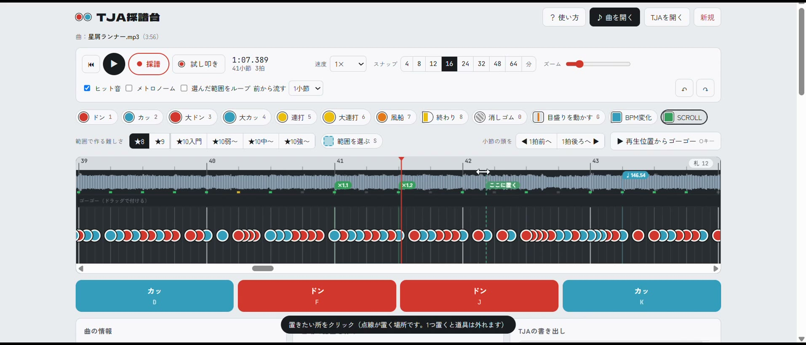
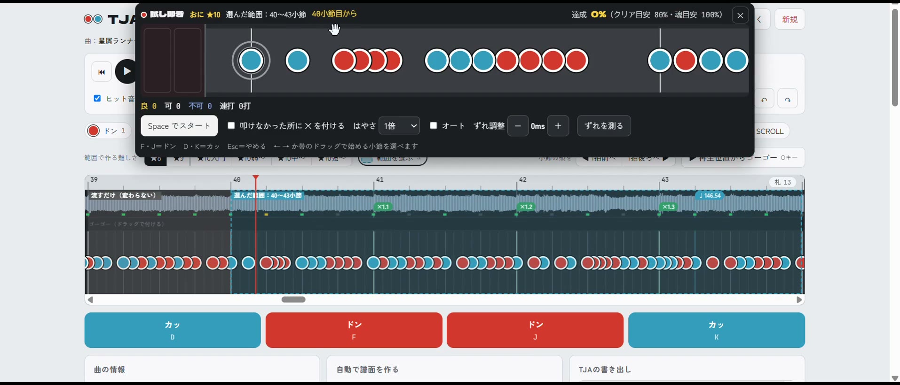
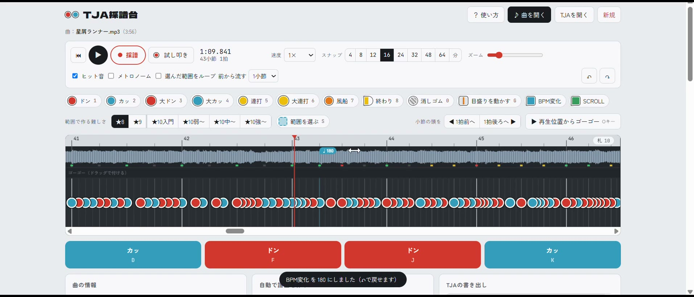
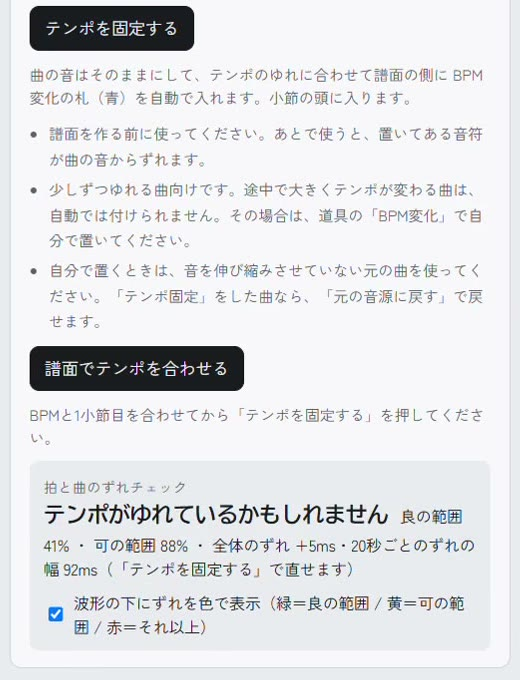
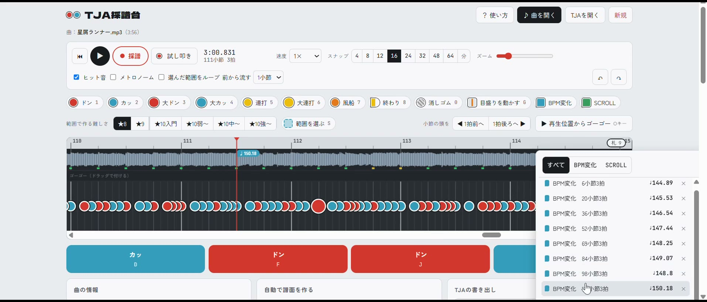
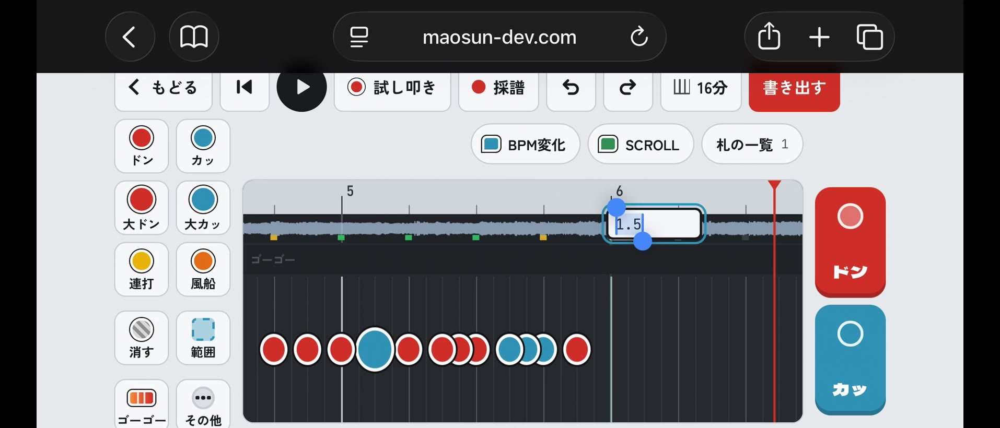
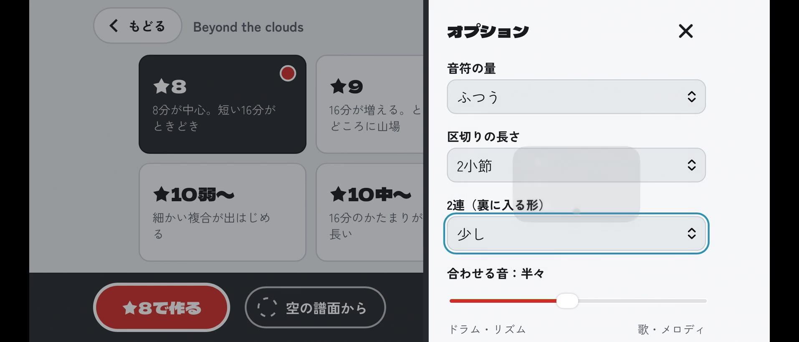
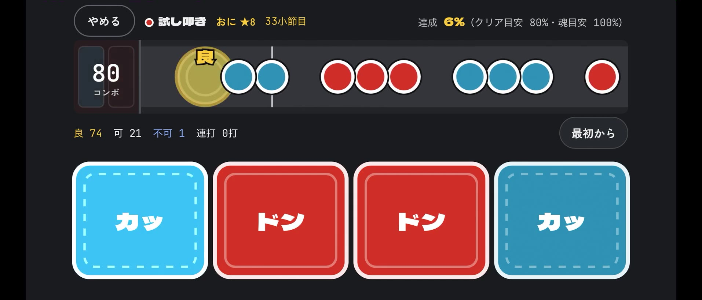
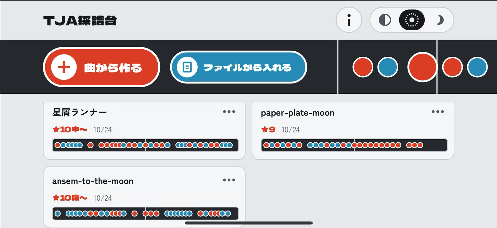

TJA採譜台をアップデートしました：SCROLL・BPM変化に対応、iPhone アプリも出ました
こんにちは、maosun です。
前の紹介動画は、1.5万回も見てもらえました。コメントも52件いただきました。本当にありがとうございます！
コメントは全部読んでいます。その中から「これがほしい」という声に答えて、TJA採譜台をアップデートしました。この記事では、新しくできるようになったことを順番に紹介します。
ツールはこちら（ブラウザ版・無料）：https://maosun-dev.com/tjasaifu/
iPhone アプリ（App Store）：https://apps.apple.com/jp/app/id6822740248
このツールは「太鼓の達人」シリーズの非公式なファンメイドコンテンツです。公式とは関係ありません。
新しくできること
- SCROLL：曲の途中で、音符が流れてくる速さを変えられます
- BPM変化：途中でテンポが変わる曲に、BPM変化を置けます
- 譜面でテンポを合わせる：曲の音はそのままで、テンポのゆれに合わせて BPM変化を自動で入れます
- 札の一覧：置いた BPM変化・SCROLL をまとめて見られます
- スマホの画面：ドン・カッを押すだけで、1つずつ置いていけます
- iPhone アプリ：作った譜面がアプリの中に残ります。zip で書き出して、また読み込めます
SCROLL：途中で流れる速さを変える
「途中で見た目の速さを変えられますか？」という声に答えました。
TJA では、音符が流れてくる速さを `#SCROLL` という命令で書きます。テンポはそのままで、見た目の速さだけが変わります。
道具の「SCROLL」を選んで、波形の上をクリックすると、緑の札が置けます。置いたら数字を入れるだけです。1.1、1.2、1.3 と少しずつ上げていけば、サビに向けてだんだん速くなる譜面が作れます。


試し叩きでも、ちゃんと SCROLL の速さで流れます。書き出した TJA にも入ります。小節の途中にも置けるし、5倍や7倍のような大きな数字も入れられます。


BPM変化：途中でテンポが変わる曲に
「最初はゆっくりで、途中から速くなる曲は作れますか？」という声に答えました。
道具の「BPM変化」を選んで、波形の上をクリックすると、青い札が置けます。数字を入れれば、そこから先のテンポが変わります。
置いた札は、クリックで数字を直したり、ドラッグで動かしたりできます。右クリックで消せます。風船の打数の札と同じ使い方です。


譜面でテンポを合わせる
前の動画で紹介した「テンポを固定する」に、たくさんの人が驚いてくれました。そこで、もう一歩進めました。
「テンポを固定する」は、曲のほうを少しだけ伸び縮みさせて、テンポを一定にする機能です。便利ですが、曲の音が少し変わってしまいます。
新しい「譜面でテンポを合わせる」は、その逆です。曲の音はそのままで、テンポのゆれに合わせて、譜面の側に BPM変化の札を自動で入れます。元の音源のまま遊べます。


少しずつテンポがゆれる曲に向いています。途中で大きくテンポが変わる曲は、自動では付けられないので、BPM変化の札を自分で置いてください。
札の一覧
札がたくさんになったときは、タイムラインの右上の「札」から一覧を開けます。行を押すと、その場所へ飛べます。数字もそこで直せます。
「BPM変化だけ」「SCROLL だけ」と絞り込むこともできるので、札が多い曲でも迷いません。


スマホの画面
「スマホで作れるのが助かる」という声も、たくさんいただきました。なので、スマホでもっと作りやすくしました。
止めたまま、右の大きなドン・カッを押すと、そこに音符を置いて、次の目盛りへ進みます。リズムを見ながら、1つずつ置いていけます。
BPM変化と SCROLL の札も、スマホで置けます。


iPhone アプリが出ました
「スマホで作るとき、曲はどうやって入れるの？」「途中で保存できますか？」という声に答えて、iPhone アプリを作りました。
「曲から作る」を押して、iPhone の中のファイルから曲を選ぶだけです。難しさを選んで「作る」を押せば、すぐに譜面ができます。オプションを開けば、音符の量なども決められます。


アプリの中で、そのまま試し叩きもできます。ボタンが大きいので叩きやすいです。


作った譜面は、アプリの中に自動で保存されます。最初の画面の棚から、いつでも続きを直せます。
「書き出す」を押すと、曲と譜面を zip にまとめて保存できます。その zip は「ファイルから入れる」でまた読み込めるので、ほかの端末に移したいときにも使えます。


ブラウザ版は、今まで通り無料で使えます。
動画でも見られます
アップデートの内容は、ずんだもんと四国めたんの動画でも紹介しています。
おわりに
全部の声にはまだ答えきれていませんが、これからも少しずつよくしていきます。「ここが使いにくい」「こういう機能がほしい」などがあれば、動画のコメントで気軽に教えてください！